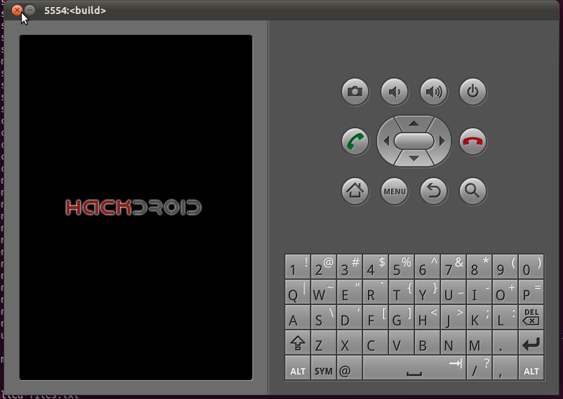

Part 1: BUILD THE SYSTEM FROM SCRATCH
In this section, you will learn how to build Android environment from scratch.
Follow the instructions below, you will build your own executable Android operating system.
Build the Environment
Your first task is to download the source code of android, compile it and run it in an emulator.
Here is the official tutorial.
The developer website will give you more knowledge about android.
In this section, we will briefly introduce the process of the Android Environment building and give you some hints.
- Build the environment
Some required packages should be installed and some environment variables should be configed in this step.
However, don't worry about that, it's easy. Google do well in this part.
Tutorial is here.
Hint:
- Ubuntu is highly recommended.
- Never use Virtual Machine(VMware/Kvm/Xen). Otherwise, it will be too slow to compile Android from source code.
-
Download the source code of android
This process is also easy and manifest. Just follow the tutorial on Android official sites.
Hint:
- It takes a long time for your downloading which is about several hours. A good option is going to sleep when you entered the download command.
- When you find your download trying failed, it is not the end of the world. Just try "repo sync" again.
-
Build the Android
After a long and tough downloading procedure, you can build the whole android now!
Follow the steps in this page.
Hint:
- Use command "make -j N" to build the system which N is your core number.
-
Run the Emulator
Congratulation!! Finally, you have made it. :)
Run the command "emulator" to find out whether your effort works properly.
Preliminary Hacking: Hack Initial Logo
Now, we have our own Android which is running on emulator. It's time to do something interesting.
In order to verify our compiling process, we are going to hack the initial logo to "Hackdroid".
This game is pretty easy to cover just follow the above steps:
- Download the initial logo here.
- Copy the file to the folder path/to/android/out/target/product/generic/root/.
- Rebuild Android and run emulator. You can see the figure below.

More information about Android boot image is availiable here.
(The boot logo comes from this thread on xdadevelopers.)